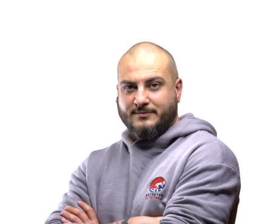

Our Team
The People Behind
Our Crafts
Our Crafts
We’re a team of designers and developers passionate about bringing ideas to life through creativity and precision.
NextDesign was founded with a simple purpose: to create websites that balance creativity and function. We believe design should not only look beautiful, but also deliver measurable results for clients.
Our team combines technical expertise with artistic vision. From branding to full-stack development, every project is crafted carefully, ensuring it reflects the client’s story while offering smooth, user-focused digital experiences.
Driven by values of honesty, excellence, and innovation, we treat each client as a partner. At Next Design, your growth becomes our mission — building solutions that endure, inspire, and perform, guided by integrity and an honouring purpose.
Our team combines technical expertise with artistic vision. From branding to full-stack development, every project is crafted carefully, ensuring it reflects the client’s story while offering smooth, user-focused digital experiences.
Driven by values of honesty, excellence, and innovation, we treat each client as a partner. At Next Design, your growth becomes our mission — building solutions that endure, inspire, and perform, guided by integrity and an honouring purpose.
Finley Dyson
Co-Founder & Sales Lead

20+
completed
projects
projects

Owen Marceau
Co-Founder & Web Designer
I am deeply passionate about web design and development, crafting websites that are not only visually clean but also highly functional. Every project I approach is guided by precision and care, reflecting a commitment to excellence and the pursuit of truth in every line of code and interface decision.
Beyond design, I specialize in backend systems, creating efficient and reliable architectures that power complex applications. My work is built on structure, clarity, and faith in God, striving to create websites shaped by creativity, and built with honest craftsmanship, while making sure every solution serves people simply, efficiently, and with integrity at the centre.
Beyond design, I specialize in backend systems, creating efficient and reliable architectures that power complex applications. My work is built on structure, clarity, and faith in God, striving to create websites shaped by creativity, and built with honest craftsmanship, while making sure every solution serves people simply, efficiently, and with integrity at the centre.
Hear Directly From
Those We Serve
Those We Serve
"Great service – efficient, fast, and very professional. Everything was handled smoothly from start to finish. Highly recommend!"

Kristine Teiváne
Beauty Salon Owner & Client
Our Mission
Our mission is to craft websites that combine beauty with technical strength, serving people with clarity and purpose. Guided by honesty, excellence, and truth, every Next Design project becomes a lasting partnership built on growth, and integrity